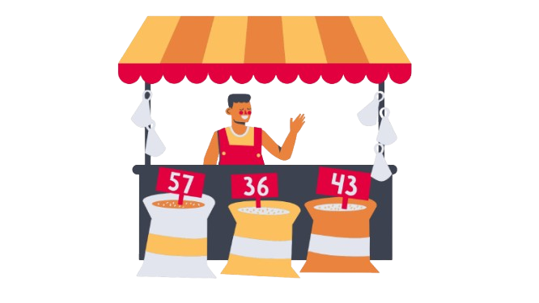
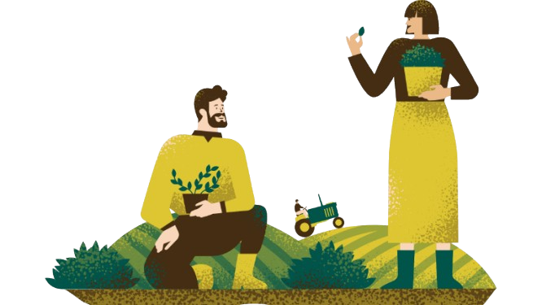

Terra Fresca é uma empresa comprometida em conectar os consumidores urbanos às riquezas dos assentamentos brasileiros, oferecendo uma ampla variedade de produtos naturais e sustentáveis. Trabalhamos diretamente com agricultores familiares para garantir que cada item — como frutas frescas, grãos, mel, ervas e óleos essenciais — seja cultivado de forma agroecológica e com respeito ao meio ambiente. Nosso objetivo é transformar a produção dos assentamentos em um modelo de desenvolvimento sustentável, valorizando as práticas tradicionais e promovendo a inclusão social. Terra Fresca é mais que uma marca; é um movimento que une saúde, sabor e sustentabilidade, diretamente da terra para sua mesa.
Saiba Mais
Nosso objetivo é que através do nosso site, os vendedores sejam capazes de anunciar seus produtos In Natura, fazendo uma conexão com clientes de outras partes do país, assim, aumentando a diversificação de produtos orgânicos dos compradores e as vendas dos fornecedores.
Saiba MaisEsses são alguns dos depoimentos de alguns dos nossos clientes
Kaylane
"Os produtos da Terra Fresca são simplesmente incríveis! A qualidade é visível desde o aroma até o sabor. Saber que vêm de práticas sustentáveis e direto de pequenos agricultores faz toda a diferença na hora de escolher para minha família."
Clara
"Descobrir a Terra Fresca mudou minha rotina. Produtos naturais, sem química e com um toque de cuidado especial. Amo saber que estou ajudando famílias e ainda colocando o melhor na minha mesa!"
Henrique
"Trabalhar com os ingredientes da Terra Fresca é um privilégio! A frescura e o sabor são incomparáveis, e ainda posso contar uma história de sustentabilidade e impacto social nos pratos que crio."
Conheça os produtores que fazem parte do marketplace Terra Fresca.
Carregando lojas...
Algumas das parcerias que fortalecem nosso querido projeto.
Na Terra Fresca , acreditamos que cada compra pode mudar vidas e preservar o planeta. Ao escolher nossos produtos naturais, você não está apenas trazendo saúde e qualidade para sua mesa. Você está fortalecendo famílias de agricultores, promovendo práticas sustentáveis e cultivando um futuro melhor para todos.
Produtos frescos, saudáveis e sem agrotóxicos.
Apoio direto às comunidades de assentamentos brasileiros.
Um impacto real na preservação do meio ambiente.
Junte-se a nós e faça parte dessa revolução verde! Seja consumidor, parceiro ou apenas alguém que acredite no poder da mudança.
